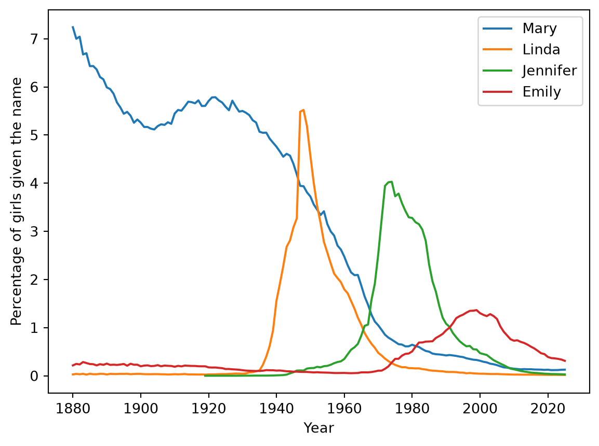
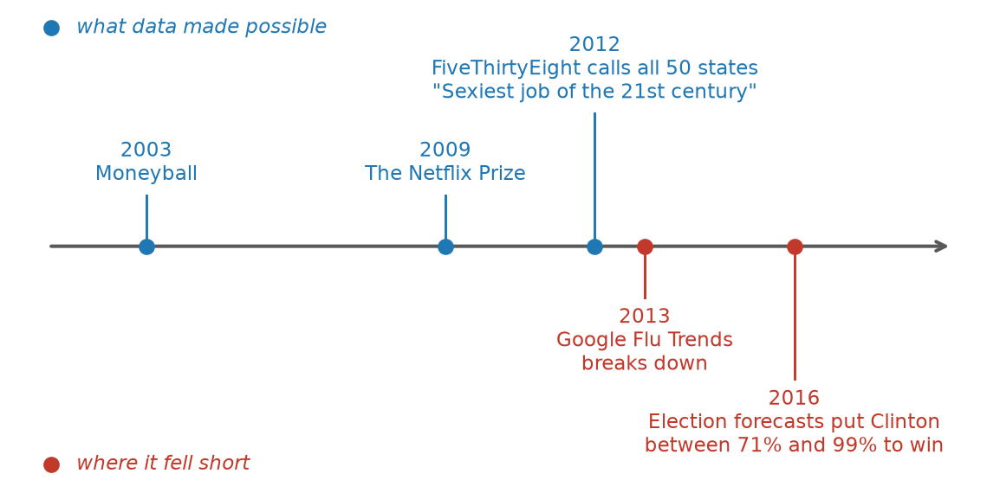
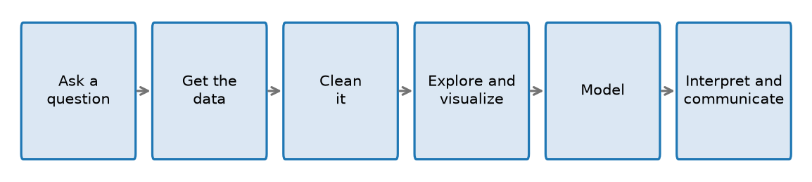
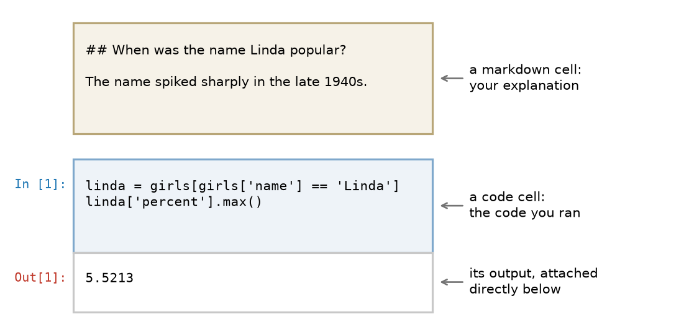
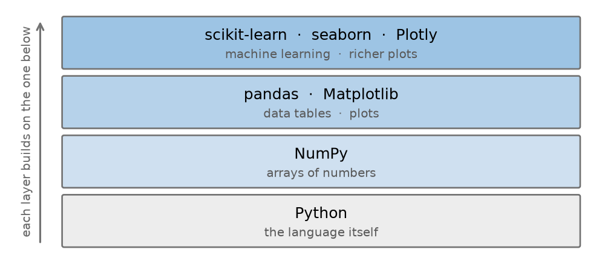
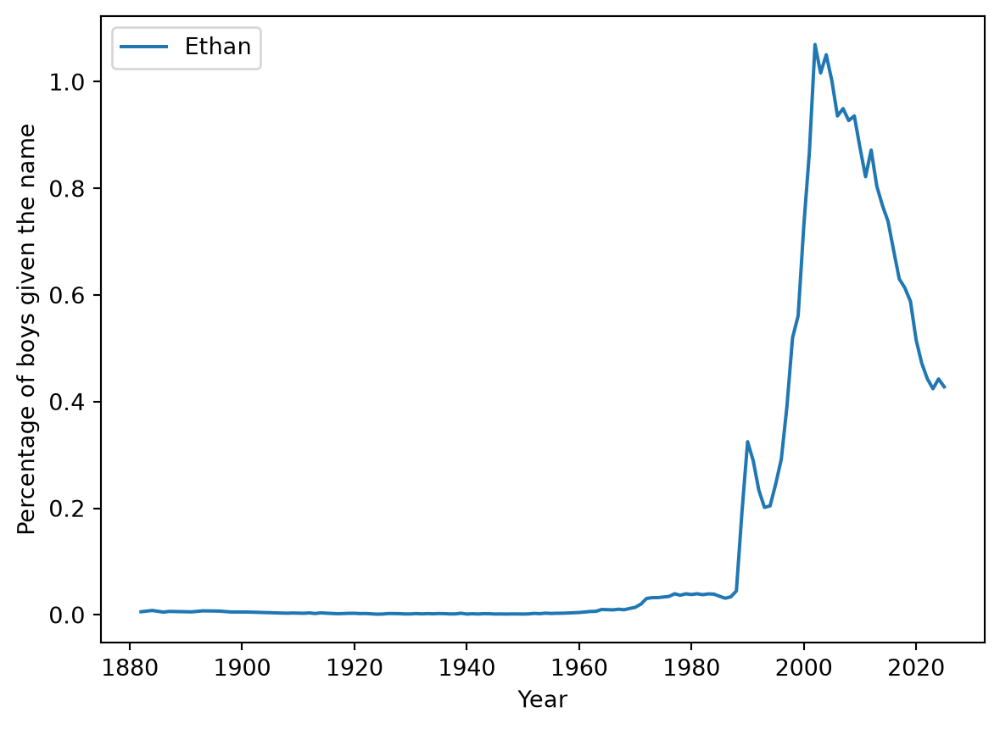

Do you know how popular your name was when you were born? Most people have only a vague sense of it. They may recall that their name felt ordinary in their class, or that they were the only one who had it, or that they tend to meet the name mostly among people either much older or much younger than they are.
This vague sense can be replaced with a more precise quantitative answer. The U.S. Social Security Administration has kept a record of the first names on Social Security card applications going back to 1880, and it publishes the thousand most common names for each sex in each year. If your name was somewhat popular, then somewhere in that file is the year your name peaked, and whether it is currently increasing or decreasing in popularity.
This book is about turning questions like this into answers. The tools involved are a programming language, some statistical concepts, and ways of thiking about evidence. These are the skills we aim to develop over the course of this book.
1.1 A first look at a data science analysis
Before defining what the field of Data Science is, it is useful to see what a small analysis that is typical of a Data Science project. The code below loads the baby-name compiiled from the Social Security Administration records and plots the popularity of four female names over time.
You are not expected to understand this code. It is here so you know what you are working toward. Its pieces arrive over the next several chapters: ?sec-descriptive-stats teaches the plotting, ?sec-data-tables teaches how to load a file and pull out the rows for one name, and Chapter 9 covers the for line that repeats the work for each name.
import pandas as pd# One row per name, per year, per sex: the 1,000 most common names each# year from 1880 to 2025names = pd.read_csv("https://raw.githubusercontent.com/emeyers/intro_datascience/main/data/babynames/baby_names.csv")names.head()
year
name
percent
sex
count
0
1880
John
0.081546
boy
9655
1
1880
William
0.080507
boy
9532
2
1880
James
0.050060
boy
5927
3
1880
Charles
0.045169
boy
5348
4
1880
George
0.043294
boy
5126
Before computing anything, it is important to understand the data we are working with. Each row in the data records one name, in one year, for one sex. The count column gives the number of babies who received that name, and the percent column expresses the same quantity as a share of all babies of that sex born that year. That share is stored as a proportion rather than as a percentage, so the value 0.081546 in the first row means that 8.2% of boys born in 1880 were named John.
With the contents of the file established, we can plot how the popularity of individual names has changed over time:
import matplotlib.pyplot as pltgirls = names[names["sex"] =="girl"]for name in ["Mary", "Linda", "Jennifer", "Emily"]: one_name = girls[girls["name"] == name] plt.plot(one_name["year"], one_name["percent"] *100, label=name)plt.xlabel("Year")plt.ylabel("Percentage of girls given the name")plt.legend()plt.show()

Each of these four names dominated a different era. Mary was the most common girls’ name in the United States in 76 of the 82 years from 1880 to 1961, and in 1880 it was given to 7.2% of girls. Jennifer reached its peak in 1974, at 4.0%, and Emily reached its own in 1999, at 1.4%.
The trajectory of Linda is the most abrupt of the four. In 1946 the name was given to 3.3% of American girls, and in 1947 that figure jumped to 5.5%. Names rarely move that quickly, and 1947 happens to be the year in which Buddy Clark’s recording of a song called “Linda”, with Ray Noble’s orchestra, was a number one hit.
It is worth being precise about what that last sentence establishes and what it does not. The data establishes the timing of the increase. The song is an explanation brought to the data from outside it, by someone who already knew that popular music influences what parents name their children. The explanation is plausible, but a file of names and counts cannot confirm it. Distinguishing between what the data shows and what we have supplied ourselves is a skill this book returns to repeatedly.
A second pattern in the plot is easier to overlook: the peaks grow steadily shorter over time. In 1880 the most common girls’ name was given to 7.2% of girls, whereas in 2025 the most common name, Olivia, was given to only 0.8%. Parents did not stop having favorites, but the pool of names they choose from has grown enormously. This represents a genuine change in American naming practices, and it emerged from nothing more than a file of names and counts.
The analysis is worth noting for two reasons. It answered a question that intuition alone could not, and it revealed a pattern that nobody had set out to look for.
1.2 What is data science?
Data science is the practice of using computation and statistical reasoning to answer questions with data. In practice it draws on three things: enough programming to load data and reshape it, enough statistics to know which conclusions the data supports, and enough knowledge of the subject to ask a question worth asking and to recognize a wrong answer when one appears.
The last of these three is the one most easily underrated. Nothing in the baby-names code knows what a name is or what it means for one to be fashionable. The code established that the name Linda rose sharply in 1947, but the connection to a popular song came from a person who already knew that music influences naming and who went looking for such an explanation. An analysis that ignores the subject matter it concerns tends to produce results that are technically correct and of little use to anyone.
1.2.1 Data science and statistics
Data science and statistics overlap heavily, and the difference between them is one of emphasis rather than of subject matter. Both are concerned with drawing conclusions from data. They tend to differ in where the data comes from, and in what counts as a good reason to trust a method.
Table 1.1: Two emphases in the analysis of data
Statistics
Data science
Where the data comes from
Often collected deliberately, to answer a specific question
Often collected for some other purpose, and reused
Typical size
Small enough to handle by hand or with a single command
Often large enough that retrieving it is part of the problem
Why a method is trusted
It has mathematical guarantees under stated assumptions
It performs well when tested against data it has not seen
How much programming
Sometimes little
Usually substantial
What comes out
An estimate, an interval, a test result
Any of those, plus predictions, visualizations, and working systems
A statistician’s instinct is to ask what model produced this data and what follows mathematically if that model is right. A data scientist’s instinct is to try several approaches and see which one predicts best on data held back for the purpose. In practice that means fitting the method on most of the rows, then checking its predictions against rows deliberately kept aside. One camp says the proof is in the math; the other says the proof is in the pudding. Both instincts are correct, and both fail in characteristic ways when used alone.
The boundary between the two is not a sharp one, and most practitioners move back and forth across it depending on the problem in front of them. The table above describes two habits of mind rather than two distinct kinds of person.
1.2.2 What data cannot do
Two cautions belong at the beginning of a book like this rather than at the end.
The first is that data is a record of the world that produced it, and that record includes the world’s mistakes. A model trained on past hiring decisions learns the decisions that were actually made, biases included, and applying such a model at scale can spread those biases far faster than any individual could.
The second is that a pattern in data is not, by itself, evidence of a cause. We encountered this a few pages ago, when the plot showed the name Linda rising sharply in 1947 and the song was offered as an explanation from outside the data. The fact that two things move together does not establish that one of them produces the other, and separating these two possibilities accounts for much of the work involved in interpreting a result honestly.
Both problems recur throughout this book, because both are ordinary features of working with data rather than rare special cases.
1.2.3 How data science became a field
The practice of analyzing data is very old, but the name given to it here is recent.
Most of the pieces were in place well before the label existed. John Tukey argued in 1962 that data analysis deserved to be treated as a subject in its own right, broader than the mathematics it grew out of (tukey1962?). In 2001 William Cleveland proposed “data science” for an expanded version of statistics that took computing seriously (cleveland2001?), and Leo Breiman described the field as split between two cultures, one building probability models and one building algorithms judged by how well they predict (breiman2001?). The tools followed: Matplotlib in 2003, NumPy in 2005, scikit-learn in 2007, pandas in 2009. You will use all four in this book.
What made the field visible outside of universities was a series of public episodes. Some of them demonstrated what analyzing data could accomplish, while others demonstrated the ways in which it goes wrong, and the second group proved to be just as instructive as the first.
Moneyball (2002–2003). The Oakland Athletics, working with one of the smallest payrolls in baseball, used statistical analysis to find players the traditional scouting system undervalued, and put together a season that included a twenty-game winning streak. Michael Lewis’s book made the story famous (lewis2003?). Careful analysis of ordinary, publicly available numbers had beaten the judgment of experts in a domain those experts were certain they understood.
The Netflix Prize (2006–2009). Netflix offered a million dollars to anyone who could improve its recommendations by 10%, and released a large dataset of ratings so that anyone could try. A combined team won in September 2009 with an improvement of just over 10%. Opening the problem to everyone beat what Netflix’s own engineers had managed. Netflix then never put the winning system into production: it was an ensemble, meaning many separate models averaged together, and it was expensive to run and hard to maintain. A winning score on a leaderboard is not the same thing as a useful system. The competition left one more mark. Researchers showed that individuals could be identified in the supposedly anonymous ratings data by matching it against their public reviews on another film site (narayanan2008?), and in 2010 Netflix cancelled the planned sequel competition.
FiveThirtyEight and election forecasting (2008–2016). Nate Silver’s statistical models called 49 of 50 states in the 2008 presidential election and all 50 in 2012, at a time when television coverage ran on the intuition of experienced commentators. Data journalism became a public genre. Then 2016 turned into the more instructive case. FiveThirtyEight gave Donald Trump roughly a 29% chance of winning, higher than most other forecasters, several of whom put it below 2%. He won, and forecasting was widely described as having failed. Whether a 29% forecast of something that then happens is a failure is a real question with a real answer, and answering it requires understanding what a probability claims in the first place. Chapter 10 takes it up.
Google Flu Trends (2008–2013). Google found that the volume of flu-related searches tracked influenza rates, and built a system that estimated flu activity faster than the Centers for Disease Control could report it. It was held up as proof that with enough data, careful modeling mattered less than sheer scale. Over time, however, its estimates drifted away from reality. By 2013 it was estimating roughly double the actual rate of flu-related doctor visits, in part because the model had been fitted years earlier and never refitted while both the world and Google’s own search behavior changed underneath it (lazer2014?). The service was eventually shut down. It is the standard cautionary example: more data did not remove the need to ask where the data came from.
Data science gets a job title (2012). A Harvard Business Review article by Thomas Davenport and D.J. Patil called the data scientist “the sexiest job of the 21st century” and put the role in front of every executive who read the magazine (davenport2012?). Kaggle, founded in 2010, had already made the work competitive and public. The label mattered practically: it created job postings, degree programs, and a shared name for work people had been doing under half a dozen others. Universities followed, launching data science degrees and renaming departments. Yale renamed its Department of Statistics to the Department of Statistics and Data Science in March 2017.
Weapons of Math Destruction (2016). Cathy O’Neil’s book documented predictive models used in sentencing, hiring, lending, and school evaluation that encoded existing inequities and applied them at scale, with little recourse for the people affected (oneil2016?). The same year, ProPublica’s investigation of the COMPAS recidivism model found that Black defendants were roughly twice as likely as white defendants to be wrongly flagged as high risk. Together these accounts established that the potential harms of predictive modeling were not hypothetical.

The conclusion of this story is comparatively undramatic. The job title gradually stopped being exotic and settled into an ordinary role in most industries. The useful parts of the initial excitement outlasted the excitement itself, and attention to the potential harms became a standard part of the work rather than an afterthought. The most recent wave of attention has moved to large language models, which Chapter 17 takes up at the end of the book.
TipExercise
Find a recent news article whose central claim rests on data. Write down three things:
The question the analysis was trying to answer.
Where the data came from, and who collected it.
One thing the data cannot tell you, even if the analysis is done perfectly.
NoteSolution
There is no single correct answer here, but a good one is specific. As an example, consider an article reporting that a city’s new bike lanes were followed by a drop in cycling injuries.
The question. Did adding bike lanes reduce injuries to cyclists?
The data. Police accident reports, collected by the city for administrative purposes rather than for this analysis. Injuries that were never reported to police are not in the data at all.
What it cannot tell you. Whether the bike lanes caused the drop. Injuries might have fallen because fewer people cycled that year, because the weather was worse, or because a different safety campaign ran at the same time. The data records what happened, not what would have happened otherwise.
Point 3 is the one worth practicing. Most weak data journalism is weak because a change over time is presented as an effect of one particular cause.
1.3 What a data science project looks like
Projects vary, but most of them pass through the same stages.

Five of these stages are reasonably self-explanatory. Modeling is the exception, and it deserves a definition: modeling means fitting a rule to the data, either in order to summarize a pattern compactly or in order to predict a value that has not been observed. Determining whether a fitted rule means anything at all is a large part of what the second half of this book is concerned with.
The chapters of the book follow these stages in order:
Two chapters sit outside this table because they supply tools used at every stage. ?sec-python-basics teaches enough Python to write any of the code at all, and Chapter 9 introduces loops and user-defined functions, which are the tools for repeating an analysis and packaging it up for reuse.
The arrows in the diagram run in only one direction, which is a simplification of how the work actually proceeds. Exploring the data frequently reveals that different data is required, or that the question one began with was the wrong question to ask. Cleaning is rarely finished on the first attempt. In practice, most projects pass through this sequence of stages more than once.
1.4 Writing analyses others can check
An analysis is best understood as an argument, and like any argument it is worth only as much as a reader’s ability to check it. A result presented without the steps that produced it asks to be taken on faith.
Meeting that standard is harder than it sounds. Over the past decade, researchers across many fields have tried to reproduce published findings and repeatedly failed, sometimes because the original work was wrong and often because the description of what was done was not detailed enough to repeat. This came to be called the replication crisis. A written summary of an analysis leaves out exactly the details that matter: which rows were dropped, and which version of the data was used.
Donald Knuth proposed a fix for a related problem in the 1980s. He argued that programs should be written to be read by people, with the explanation and the code composed together as a single document (knuth1984?). He called this literate programming. Applied to data analysis, the idea is that the writing, the code, and the results belong in one document, so that a reader can follow the reasoning and see precisely what produced each number.
1.4.1 Jupyter notebooks
A Jupyter notebook is a document built on that idea. It consists of a sequence of cells of two kinds. Markdown cells hold text, which is where the explanation, the reasoning, the headings, and any equations belong, while code cells hold the code itself. When a code cell is run, its output appears directly beneath it and remains there as part of the document.
Markdown is a plain-text way of marking up formatting. You type ## A heading to get a heading and **important** to get bold, and the notebook renders it when you run the cell. The markdown cell in the diagram below shows what you type rather than how it looks once rendered.

The number in brackets beside a code cell is its execution count. The first cell run in a session is labeled [1], the next [2], and so on. The count records the order in which the cells were actually executed, which is not necessarily the order in which they appear on the page. This number is worth keeping in mind, because the next section concerns what happens when those two orders disagree.
To run a cell, click on it and press Shift+Enter. You can return to a cell, change it, and run it again as often as you like. That freedom to revise is what makes a notebook well suited to exploring data, and it is also the source of one difficulty that you should understand before encountering it.
1.4.2 The order cells run in
A notebook keeps a running memory of everything you have executed. This memory is called the kernel: the Python session sitting behind the notebook. If you define a variable in one cell and run it, that variable exists in the kernel from then on, no matter where the cell sits on the page or whether you later delete it.
This means a notebook that works perfectly for you can fail for anyone else. Suppose you write a cell, run it, then scroll up and edit an earlier cell without re-running the ones below. The notebook on your screen is now telling a story that its own code no longer produces. A reader who opens it and runs the cells from top to bottom gets different results, or an error.
The execution counts are what allow you to detect this situation. If you scroll through a notebook and the brackets read [1], [7], [2], then the cells were not run in the order in which they are written, and the results displayed cannot be trusted.
There is a simple habit that prevents the problem. Before sharing a notebook or submitting one, restart the kernel and run every cell from the top. In JupyterLab this option is Kernel → Restart Kernel and Run All Cells, while other notebook tools call it Restart & Run All. Doing so clears the kernel’s memory and runs everything in order, exactly as a new reader would. If the notebook produces the same results after that, then it says what it appears to say.
This book is itself written this way, using a system called Quarto that applies the same idea to books. Every figure in these pages was produced by running the code you can see, at the moment the book was last built, and every number quoted in the text was checked against that code. When the chapter says Linda jumped to 5.5% in 1947, that number came out of the data file rather than out of the author’s memory.
TipExercise
A student writes three cells and runs them from top to bottom:
prices = [3.10, 3.25, 3.40]
average =sum(prices) /len(prices)
print(average)
The third cell prints 3.25. The student then goes back and edits the first cell to read prices = [3.10, 3.25, 3.40, 4.00], runs only that first cell, and runs the third cell again.
What does the third cell print now? What would a reader see if they opened the notebook fresh and ran all three cells in order?
NoteSolution
The third cell still prints 3.25.
Editing and re-running the first cell changed prices, but average was never recomputed. The second cell has not run since the edit, so average still holds the value calculated from the original three prices.
A reader who opened the notebook fresh and ran all three cells in order would see 3.4375, the average of the four prices. The student’s notebook shows one number on screen while its code produces another. Restart & Run All would have caught this immediately.
1.5 Building on the work of others
Almost nobody writes a data analysis entirely from scratch. The plot at the start of this chapter took a dozen lines of code, and every one of those lines rested on work done by other people: reading a file in a standard format, holding a table in memory, choosing where to place the axis ticks, and deciding how to draw a line. Written from nothing, that plot would have been a substantial programming project.
All of this is available because Python code can be packaged and shared. Three terms are easy to confuse and are worth separating:
A script is code written to do one task, run start to finish. Downloading a set of files is a good use for a script.
A module is a file of code meant to be reused, loaded by other code rather than run on its own.
A package, also called a library, is a collection of related modules distributed together.
Loading a package into your own code is called importing it, and it looks like this:
import pandas as pd
That line makes the pandas package available and gives it the short name pd, so that later code can write pd.read_csv(...) instead of the full name. ?sec-python-basics covers how this works. For now the point is only that the line exists, and that most of what this book does follows from it.
Python is not the only language used for this work. R is the other common choice, and it is well suited to statistics and to producing reports. Python’s advantage is that it is a general-purpose programming language that also has strong data packages, so the same language that loads your data can run a website or control an instrument. Either language is a good place to start, and people who do this professionally often use both.
1.5.1 The packages we will use
Table 1.3: The main packages used in this book
Package
What it does
Where it appears
Matplotlib
Draws plots
?sec-descriptive-stats, ?sec-data-visualization
NumPy
Arrays of numbers and fast computation on them
?sec-array-computations
pandas
Data tables: loading, filtering, grouping, joining
These packages are layered on one another rather than independent. NumPy provides the array of numbers that nearly everything else stores its data in; pandas builds tables on top of NumPy arrays; scikit-learn expects its input as arrays or tables.

Every package in that table is free and open source, written and maintained by communities of contributors. These packages also change over time. New versions add features, occasionally rename existing ones, and sometimes break code that previously worked. This is the reason a careful analysis records which versions of each package it used, a point that ?sec-setup returns to.
1.5.2 Getting set up
Running the code in this book requires three things: Python itself, the packages listed above, and a way to run notebooks. Installing them is a one-time task, and it is the part of learning data science most likely to be frustrating for reasons that have nothing to do with data science.
?sec-setup walks through it with a tool called uv, and also covers the two alternatives you will run into in other courses and workplaces, pip with venv and conda. If you cannot install software on the computer you are using, it covers running notebooks in a browser instead, which requires installing nothing.
Once you have a notebook you can run, the exercise below confirms that everything is connected properly.
TipExercise
Open a Jupyter notebook and run the following two lines in a code cell:
import pandas as pdprint(pd.__version__)
If a version number prints, pandas is installed and your setup works. If you get a ModuleNotFoundError instead, the package is not available in the environment your notebook is using. An environment is the particular Python installation and set of packages your notebook is connected to, and ?sec-setup explains both what that means and how to fix it.
NoteSolution
import pandas as pdprint(pd.__version__)
3.0.5
Your version number will almost certainly differ from the one shown here, and that is fine. What matters is that a number printed at all.
1.6 How to use this book
This book assumes no programming experience and no mathematics beyond arithmetic. You need a computer you can install software on, or failing that, an internet connection and a browser.
Type the code out rather than simply reading it. Programming is a skill that resembles playing an instrument more than it resembles learning a set of facts, and it does not transfer from the page merely by being understood. Once a piece of code runs, change it and see what happens: plot a different name, or break something deliberately and read the error message that results.
Most sections end with an exercise, and every exercise has a solution you can expand. Try the exercise before opening the solution. The difficulty of a problem you have not attempted is impossible to judge, and reading a worked solution produces a feeling of understanding that is not the same thing as understanding.
The chapters are meant to be read in order: later chapters use the tools introduced earlier, and nothing is used before it is taught.
1.7 Summary
Data science uses computation and statistical reasoning to answer questions with data. Knowledge of the subject the data is about is part of the job, not an optional extra.
It overlaps heavily with statistics. The differences are of emphasis: where the data comes from, how much programming is involved, and whether a method is trusted because of a mathematical guarantee or because it performs well on data it has not seen.
Because data records a world that contains its own biases, a model built on that data can reproduce and spread them. A pattern is also not a cause.
The field became publicly visible through a series of episodes, some of which showed what analyzing data made possible and some of which showed how it fails. Both halves matter.
Most projects move through the same stages: ask a question, get the data, clean it, explore and visualize, model, then interpret and communicate. Expect to go around that loop more than once.
Literate programming is the practice of writing explanation and code together in one document. Jupyter notebooks apply it to data analysis, mixing markdown cells, code cells, and the output of that code.
Because a notebook’s kernel remembers everything it has run, cells run out of order can make a notebook show results its own code no longer produces. Restart the kernel and run all cells before sharing one.
A package is a collection of reusable code that someone else wrote and shared. Analyses are built on layers of them, and this book uses Matplotlib, NumPy, pandas, scikit-learn, and several others.
1.8 Exercises
TipExercise
Return to the code at the start of this chapter and plot your own first name, or the name of someone you know.
Change the list of names in the for line to the name you want, and change "girl" to "boy" if appropriate. Then read off the plot: in what year was the name most popular, and roughly what percentage of babies received it that year?
There are two limitations of the data to be aware of. The records stop in 2008, and they include only the thousand most common names for each sex in each year, so an uncommon name may not appear in them at all.
NoteSolution
Only two strings in the original cell need to change. Using “Ethan” as the example:
boys = names[names["sex"] =="boy"]for name in ["Ethan"]: one_name = boys[boys["name"] == name] plt.plot(one_name["year"], one_name["percent"] *100, label=name)plt.xlabel("Year")plt.ylabel("Percentage of boys given the name")plt.legend()plt.show()

The name sits close to zero for a century and then climbs sharply from the late 1980s, peaking a little above 1% shortly after 2000. Reading that off the plot is all the exercise asked for.
If you want the exact figures rather than an eyeballed estimate, pandas can find them. You are not expected to write this yet; the tools appear in ?sec-data-tables.
The peak is 2002, when 1.07% of boys were given the name. Compare that with Mary’s 7.2% in 1880: even a name at the top of its popularity today reaches a small fraction of what a common name reached a century ago.
If nothing plots at all, the name is probably absent from the data because it never reached the top thousand in any year.
TipExercise
Pick a question you want answered, in any area you care about. Sketch how you would work through the six stages in Table 1.2.
For each stage, write one sentence. Be concrete about the second stage in particular: name the data you would need, and say whether you think it exists and who would have it.
NoteSolution
Answers will vary. As a worked example, take the question “are the buses on my route getting less reliable?”
Ask a question. Has the proportion of buses on route 12 arriving more than five minutes late increased over the past three years?
Get the data. Scheduled and actual arrival times per stop. Many transit agencies publish this; if mine does not, I would have to ask, or record arrivals myself for a period, which would give a much smaller and more limited dataset.
Clean it. Decide how to treat trips that were cancelled outright, stops that were skipped, and any period where the route itself was changed.
Explore and visualize. Plot the proportion of late arrivals by month over three years, and look at whether the pattern differs by time of day.
Model. Estimate the size of the change, and check whether a trend that size could plausibly be produced by chance variation alone.
Interpret and communicate. Write the result up with the plot, state what the data does not cover, and say plainly whether the change is large enough to matter to a rider.
The most common weak point in a sketch like this is stage 2. Questions that are easy to ask are frequently attached to data that nobody collected.